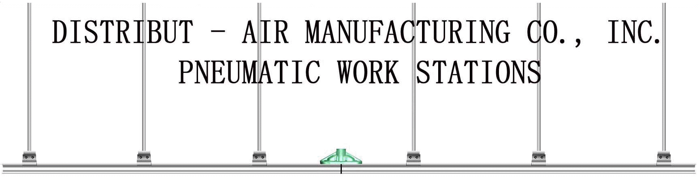
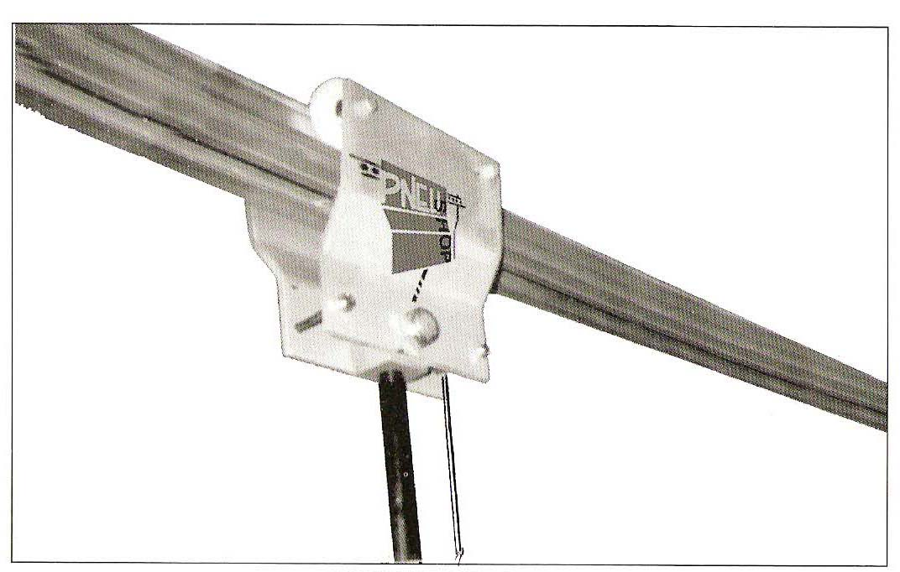

|

|
||||
| Home | About | Contact | Products | Charts |
DELIVERING AIR AROUND THE WORLDWelcome to DISTRIBUT - AIR MANUFACTURINGThe Distribut-Air pneu-shop system is a flexible means of distributing pneumatic power to air tools making the use of pneumatics in your shop as easy and accessible as electric. Pneu-shop eliminates long lengths of hose, reels, and drooping coils. Compressed Air is supplied at any point along an over head rail system. A rolling take-off device travels the rail and is not limited to the line lengths, recoil or the bulk and clearance of festooning. Compact and light, the system is designed to provide dependable performance. More than just versatile, pneu-shop power enhances production.

Modifications of the system are easily accomplished by installing additional sections of rail. Standard sections are available in 5, 10, 15, and 20 foot lengths. Curved sections are special order starting at 36 inch 90 degree radius. By connecting a combination of sections together you can obtain an infinite variety of configurations to fit all applications. Installation is quick and easy. Just a few standard tools are required. Our systems are designed for do-it-yourself installation. Easy to follow instructions will accompany your pneu-shop system. Pneu-shop is available in a ceiling mount or I-beam suspension system. Available with a take-off wheel that delivers air supply to installations demanding a continuous source of power such as cranes, hoists and bridges. Also available in a low cost, roll and spot take-off device for hand held tools. |
||||
| Home | About | Contact | Products | Charts |